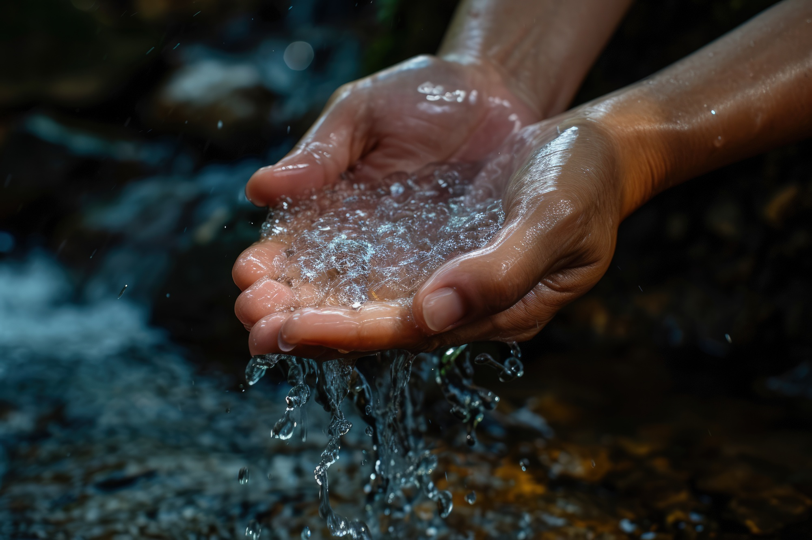
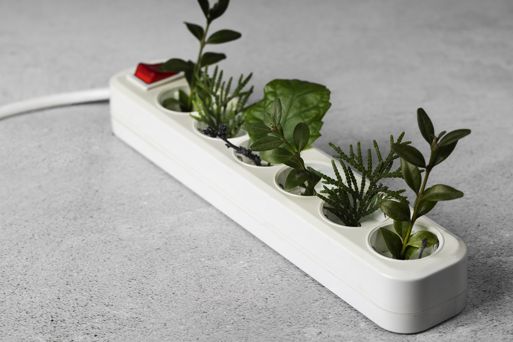
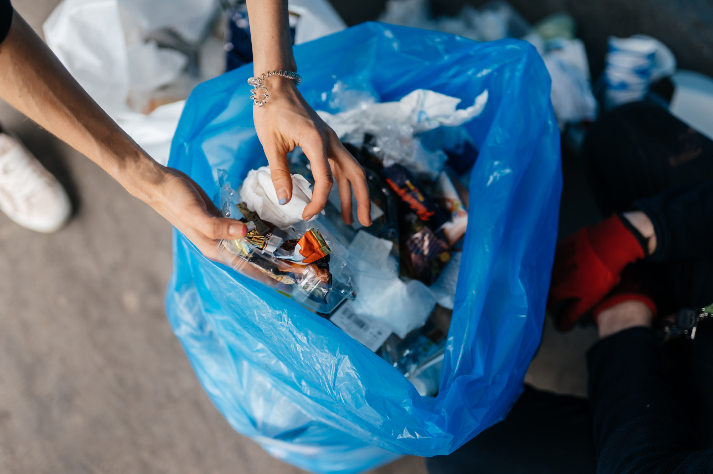
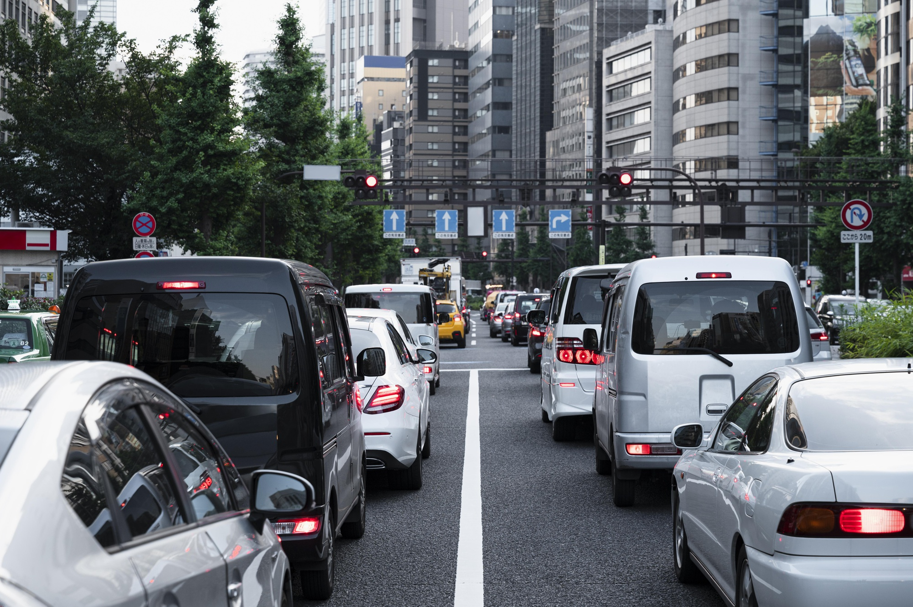
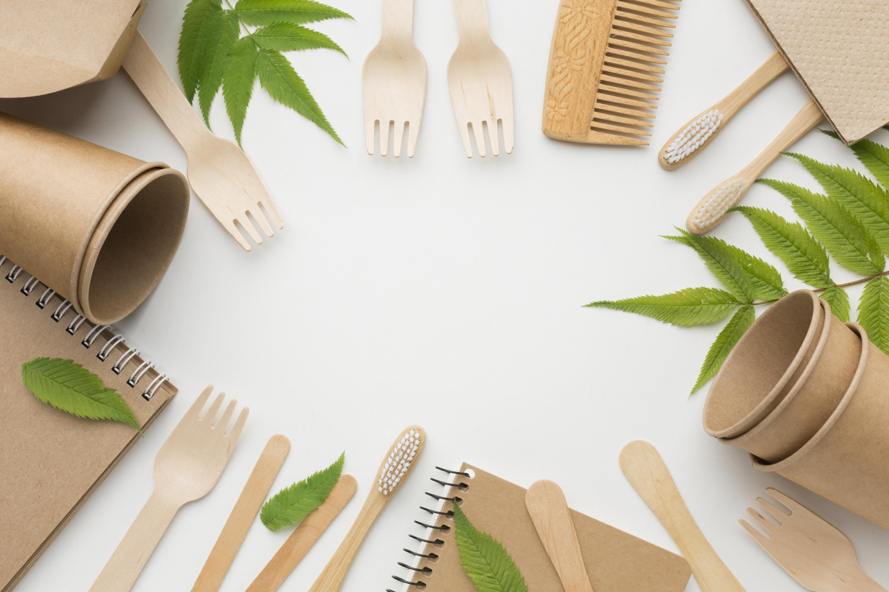

SOBRE O PROGRAMA
Bem-vindo ao DevEco, um projeto dedicado à educação ambiental com o objetivo claro de inspirar e auxiliar indivíduos a compreenderem o papel crucial que desempenham na construção de um mundo mais sustentável. Acreditamos que, por meio da conscientização e da ação coletiva, cada um de nós podemos contribuir para tornar o planeta mais harmonioso e equilibrado.
Neste site, você encontrará uma cartilha com hábitos simples e poderosos para adotar no dia a dia, contribuindo para um impacto positivo no meio ambiente. Quando cada um faz a sua parte, garantimos um futuro melhor e continuamos a desfrutar das maravilhas do nosso lindo planeta Terra.
BONS HÁBITOS A SEREM SEGUIDOS

1. Economize Água
Economizar água é uma tarefa bastante simples. Para isso, basta que algumas práticas do dia a dia sejam mudadas. Uns dos pontos mais importantes são: reduzir o tempo de banho e verificar se há vazamentos de água em casa. Além disso, aproveitar a água da chuva e reaproveitar a água da máquina de lavar também são ótimas dicas!

2. Economize Energia
Para economizar energia, é importante lembrar-se de ligar apenas os aparelhos elétricos necessários. Ao utilizar o computador, por exemplo, não é necessário ligar a televisão. Outro ponto importante é, ao sair de um ambiente, verificar se a luz está ligada e, se sim, apagá-la. A redução do tempo de banho também é uma importante dica para economizar energia

3. Descarte Correto do Lixo
Descartar o lixo adequadamente evita a poluição e até mesmo a propagação de doenças. Ao jogar lixo em um terreno baldio, por exemplo, você pode estar contribuindo para o aumento da população de ratos, baratas e até mesmo de mosquitos-da-dengue.

4. Recicle o seu Lixo
Essa medida evita o gasto desnecessário dos recursos naturais e ainda ajuda a diminuir a concentração de lixo no ambiente.

5. Preserve a Vegetação Nativa e os Cursos D'água
Evitando desmatamento e alteração dos cursos d'água, por exemplo, estamos colaborando para a manutenção da biodiversidade. Lembre-se de que cursos d'água e locais de vegetação preservada são habitat de várias espécies importantes.

6. Utilize Veículos Apenas Quando Necessário
Os carros são responsáveis pela liberação de uma grande quantidade de poluentes na atmosfera, sendo assim, restringir seu uso é importante. Se o local de destino é próximo, por que não ir a pé? É importante lembrar que as pessoas que possuem carro devem sempre realizar a manutenção do veículo para evitar que mais poluentes sejam liberados.

7. Fazer um Consumo Consciente
Antes de comprar, observe se a empresa é ecologicamente sustentável e considera seu impacto no meio ambiente. Priorize pequenos negócios e empreendedores, que geralmente têm uma cadeia produtiva mais saudável e fomentam a economia local. Assim, você apoia iniciativas preocupadas com práticas ecológicas e contribui para um consumo mais consciente.

8. Reduzir Consumo de Plástico
O plástico é responsável por 80% do lixo marinho e, segundo a ONU, pode superar a quantidade de peixes nos oceanos até 2050. Por ser difícil de desintegrar, ele polui por até 200 anos, causando graves impactos ambientais e obstruindo bueiros, o que agrava ainda mais o problema.

9. Usar Sacola Retornável para Compras
As sacolas plásticas, usadas por pouco tempo, têm grande impacto ambiental: cerca de 1,5 bilhão são consumidas diariamente, levando 450 anos para se decompor. Muitas não são recicláveis, poluem rios e mares e causam a morte de cerca de 100 mil pássaros e mamíferos por ano devido à ingestão.

10. Optar por Produtos Ecológicos
É cada vez maior a oferta por produtos recicláveis. Mas ainda é muito pouco dentro do que é preciso fazer. Só com a exigência de consumidores cada vez mais conscientes conseguiremos que mais embalagens e produtos sejam recicláveis, com o mínimo impacto ambiental possível.